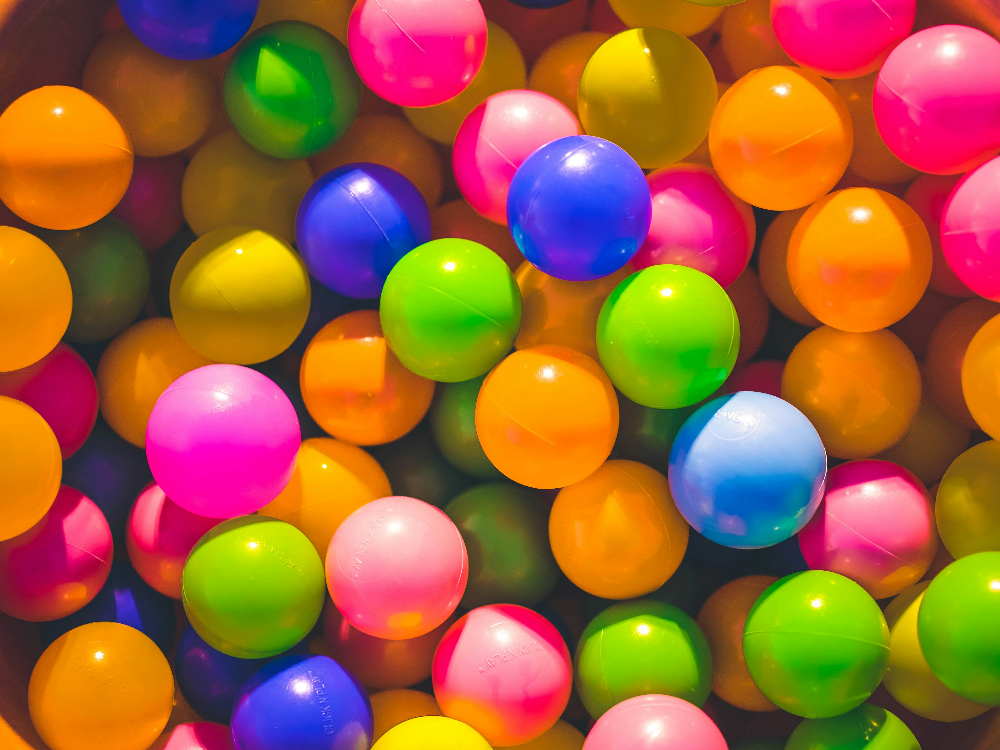
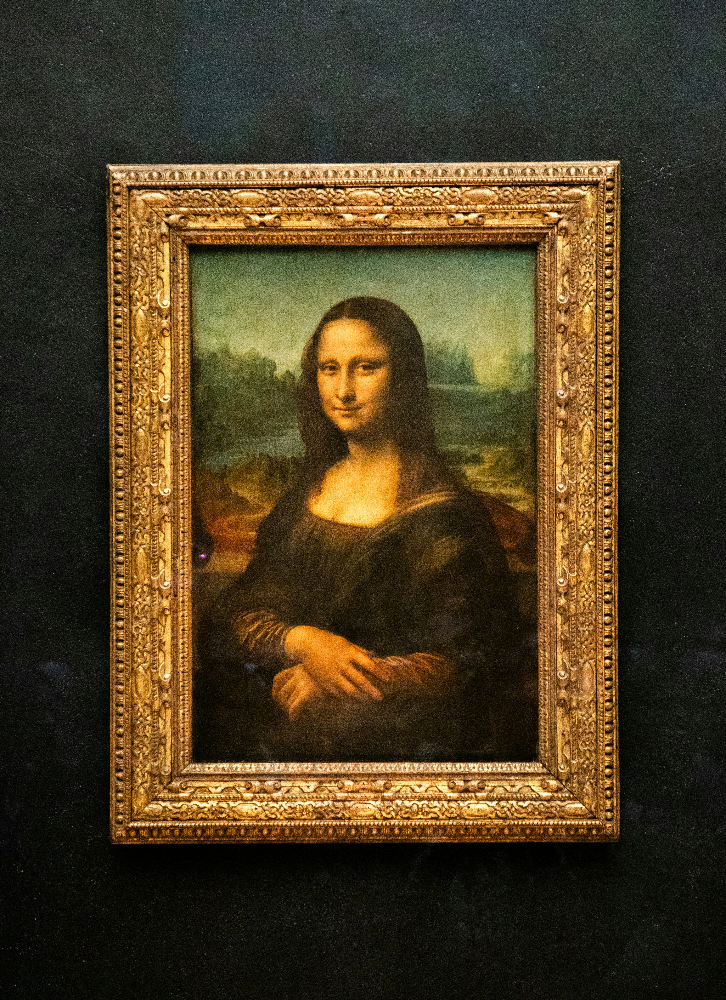
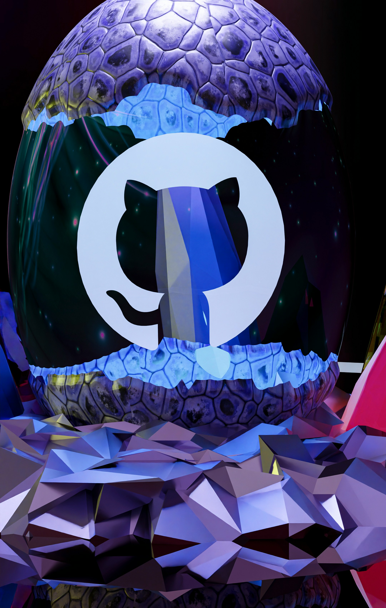

液态玻璃
它不是普通的模糊磨砂玻璃，而是一块会弯折光线的真实透镜：玻璃边缘带着一圈倒角， 背景透过倒角时像穿过真正的玻璃一样发生折射，弯曲程度由物理学中的Snell 折射定律 逐像素精确计算。玻璃中心完全平坦，通透零畸变；只有边缘的环形倒角带， 会把玻璃之外的背景「拉」进边缘。不同颜色的光折射能力不同， 因此边缘还会析出一条 外红内蓝 的彩虹细边——和棱镜分光是同一个原理。 转动控制台的折射率滑杆，从水到蓝宝石，边缘弯折会实时跟着变化。
观察点一 · 折射与色散
玻璃药丸横跨两张照片的接缝 —— 倒角带按 Snell 定律把接缝两侧的照片拉入边缘（物理上红端位移最大），中心零畸变。
真实平板玻璃只有在表面倾斜时才会弯折光线。组件按「平板 + 圆角倒角」几何逐像素解算： 距边缘 d 处的表面倾角 sinθ₁ = 1 − d/r，经 Snell 定律 sinθ₂ = sinθ₁/n 折转后， 你在该点看到的是 z(d)·tanθ₂ 之外的内容——所以玻璃中心完全通透（物理零畸变）， 而边缘像一圈把外界拉进来的环形透镜。
色散同样来自折射率本身：n蓝＞n绿＞n红，tanθ₂ = sinθ₁/√(n²−sin²₁) 随 n 增大而减小——所以红端图像被推得最远、蓝端最近，倒角带由外向内呈现红→绿→蓝的物理排序。 拖动控制台的折射率滑杆（水 1.33 → 玻璃 1.5 → 蓝宝石 1.77），边缘弯折会实时跟随 Snell 解变化。



观察点二 · 液体交互
按住玻璃圆钮在彩色文字上拖动 —— 移动时整圈边缘都在折射，松手有按压回弹；指针悬停时边缘 glint 会转向指针方位（光随视角打在倒角上）。
控制台
参数实时热切换（LiquidGlass.setOptions），关闭折射即可与普通毛玻璃直接对比。
n=1.5 为冕牌玻璃，1.33≈水、1.77≈蓝宝石；倍率 1.0 即严格 Snell 解。
组件：liquid-glass/liquid-glass.js（零依赖，<liquid-glass> 自定义元素 / new LiquidGlass(el, opts) 两种用法）。
backdrop-filter: url(#svg) 目前仅 Chromium 可靠；Safari / Firefox 自动降级为纯 blur 毛玻璃（见右下角徽章）。
原理速览 · 一块玻璃的六个层
① 背景采样
backdrop-filter 拿到玻璃下方的真实像素，一切效果的原材料。
② Snell 折射
倒角几何 sinθ₁=1−d/r → Δ=z·sinθ₁/√(n²−sin²₁)，平坦中心零畸变，边缘把足迹外的背景拉入。
③ 分谱色散
n蓝＞n红，每通道独立解 Snell，红端图像位移最大，边缘呈外红内蓝的物理排序。
④ 磨砂增艳
blur() saturate() brightness() 模拟光散射与环境色透入玻璃。
⑤ 镜面高光
锥形光谱环：crisp 描边 + 主/次 glint 随指针方位旋转，glint 两侧带暖→冷光谱微染。
⑥ 液体反馈
按压 scale(.965) spring 回弹；内容层独立于滤镜，文字永不扭曲。